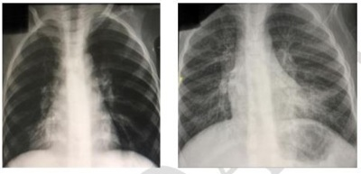

Mariana, 6 anos, é trazida ao pronto atendimento com tosse persistente e febre há 2 semanas. Ao ser examinada, notam-se a frequência respiratória de 50 irpm, frequência cardíaca de 125 bpm e murmúrio vesicular diminuído no hemitórax esquerdo, Foi feita radiogra a do tórax que evidencia extenso derrame pleural. A toracocentese apresentou líquido amarelado, com a citologia diferencial, demostrando predomínio de neutrófilos. O agente etiológico mais provável a ser considerado é:
Criança, 2 anos, é levado à emergência com quadro de febre e tosse há 3 dias. Exame físico: Tax: 37,2ºC, regular estado geral, FR: 58 irpm e tiragem subcostal. Ausculta pulmonar: crepitações em base de hemitórax esquerdo. Radiogra a de tórax: infiltrado em lobo inferior esquerdo. A conduta mais adequada nesse caso é:
As doenças respiratórias correspondem a aproximadamente 50% dos atendimentos ambulatoriais, sendo que 12% destes são por pneumonias. Estima-se que 4,3 milhões das mortes de crianças menores de 5 anos ocorram anualmente por infecções respiratórias agudas, que nessa faixa etária representam 20% dos óbitos. Os principais agentes etiológicos de pneumonia adquirida na comunidade, de acordo com a faixa etária, são:
Menino com 1 (um) ano de idade, sem antecedentes patológicos, apresenta história de febre há 7 dias acompanhada de um episódio de vômito no primeiro dia do quadro. Ao exame físico apresenta-se acianótico com frequência respiratória de 40 rpm, sem tiragem intercostal, saturação de O2 (SO2): 91% em ar ambiente; aceitação regular da alimentação. Qual das alternativas abaixo é relevante na indicação de tratamento hospitalar do quadro?
Sobre as pneumonias adquiridas na comunidade (PAC) na pediatria é correto afirmar:
Menino, 6 anos de idade, previamente hígido, deu entrada em pronto socorro por quadro de tosse, desconforto respiratório e febre de até 39,5°C há 1 dia. Realizada radiogra a de tórax que evidenciou pneumonia a direita com presença de derrame pleural. Optado pela toracocentese, com saída de 50 mL de líquido purulento. Frente a estes dados, além da antibioticoterapia endovenosa, está indicado:
Criança de 6 anos é atendida no ambulatório de pediatria com diagnóstico de pneumonia por Mycoplasma pneumoniae. O antibiótico indicado para tratar essa criança, dentre os citados a seguir, é
A frequência respiratória, incursões respiratórias por minuto (irpm), acima da qual considera-se taquipneia em lactentes aos 8 meses de idade é:
Em relação às pneumonias na infância, assinale a alternativa CORRETA.
Lactente, 9 meses, com história de tosse produtiva, febre (Tax 38,3 °C) e taquidispneia, é levado para pronto-socorro por sua mãe. Ao exame físico, é confirmado diagnóstico de pneumonia. Qual dos itens listados abaixo tem de ser considerado para que se indique a internação?
As principais etiologias de pneumonia adquirida na comunidade variam de acordo com a faixa etária. Qual das alternativas abaixo apresenta agentes etiológicos comuns em recém-nascidos e em crianças maiores de 5 anos de idade?
Menino, 8 anos de idade, com antecedente pessoal de asma, em uso de formoterol com budesonida. Em seguimento com pediatra, vem à consulta agendada, com relato que nos últimos 4 meses apresentou dois episódios de pneumonia (febre por 7 dias, acompanhada de taquipneia e tosse produtiva), com necessidade de uso de amoxicilina com clavulanato, havendo melhora da febre após 3 dias de antibiótico. Encontra-se assintomático há 1 semana. Traz consigo as radiogra as reproduzidas a seguir, com intervalos de 2 meses entre as imagens. Ao exame clínico, paciente sem alterações de interesse. De acordo com a história e as imagens apresentadas, pode-se afirmar que:

Um paciente de 47 dias é levado à consulta com quadro de tosse há 2 dias e febre (não está mensurada). Ao exame, FR = 75irpm, estertores crepitantes em ambas as bases pulmonares. Nesse caso, o diagnóstico e a conduta aplicada, segundo normas do Ministério da Saúde, são, respectivamente:
Pré-escolar de três anos é levado à emergência com quadro de febre e tosse há três dias. Exame físico: t. axilar 38,5ºC, regular estado geral, FR: 58 irpm e tiragem subcostal. Radiogra a de tórax: broncopneumonia em lobo inferior esquerdo com derrame pleural laminar ipsilateral. O diagnóstico e a conduta adequados são, respectivamente:
Considere um pré-escolar de 4 anos com quadro de osteoartrite de joelho. Há dois dias apresenta febre alta 39.7°C, dispneia e gemência. No exame clínico percebe-se hipoventilação em região posterior de hemitórax direito. O Rx mostrou consolidação, derrame pleural e pneumatocele. O diagnóstico mais provável é:
Em relação às pneumonias adquiridas na comunidade (PAC), analise as assertivas abaixo: I - Segundo a OMS, crianças com PAC e com presença de tiragem subcostal são classificadas como portadoras de pneumonia grave. II - Na criança com infecção respiratória aguda, a Frequência Respiratória (FR) deve sempre ser pesquisada visando ao diagnóstico de PAC. III - Em lactentes a partir de 2 meses até pré-escolares aos 5 anos de idade, os vírus respiratório sincicial, parain uenza, influenza, rinovírus e adenovírus são agentes frequentes de PAC e o agente bacteriano mais frequente é o pneumococo. Quais estão corretas?
Lactente de 16 dias, pesando 3320g, amamentado exclusivamente ao seio materno, é levado à Unidade Básica de Saúde com quadro de tosse, coriza, febre baixa há 36 horas e di culdade de respirar nas últimas 12 horas. Apresenta temperatura axilar = 38ºC, FR = 62 irpm, tiragem intercostal e ausculta pulmonar com estertores subcrepitantes na base do hemitórax esquerdo. Qual é conduta mais adequada?
Escolar, 8 anos, com história prévia de asma brônquica, refere “cansaço”, há uma semana e febre baixa com leve taquipnéia sem esforço respiratório há dois dias. A ausculta pulmonar revela sibilos. A mãe refere que neste episódio, “a chieira no peito“ está custando a passar, mesmo tendo usado suas medicações corretamente. O RX revela leve in ltrado bibasal. Restante do exame físico sem alterações. Qual o agente etiológico mais provável?
Qual é o germe mais envolvido na causa de derrame pleural em crianças de 0 a 5 anos?
Escolar de 7 anos apresenta tosse seca diária, irritativa, há 20 dias, após quadro de faringite. Mãe relata que ela apresentou o mesmo quadro respiratório, que persistiu por quase um mês, cedendo após uso de ""muitos xaropes"". Exame físico: regular estado geral, eupneico, apirético, crepitações esparsas em bases pulmonares. Em relação à questão anterior, qual seria o melhor tratamento para o provável diagnóstico da criança?
O antibiótico mais adequado para tratar pneumonia estafilocócica cujo agente é sensível à meticilina (MSSA) é:
Criança de 1 ano e 2 meses apresentando história de 5 dias de febre e dispneia associada à tosse e recusa alimentar. Ao exame físico apresenta-se hipocorada, hidratada, FR 56 irpm, SO2 em ar ambiente de 97%, com discreta tiragem intercostal. Hemodinamicamente estável, sem critérios para sepse. Na ausculta pulmonar apresenta MV abolido à direita com sopro tubário audível em terço superior do hemitórax direito. Radiogra a mostra opacidade de todo o hemitórax direito com desvio do mediastino para a esquerda. Não apresenta nada de importante em história patológica pregressa e suas vacinas estão todas em dia. Avô materno fez tratamento para tuberculose há 2 anos com tratamento completo e cura. O diagnóstico e a conduta mais adequada para o quadro acima seriam:
Em relação à pneumonia adquirida na comunidade (PAC) em crianças, considere as seguintes afirmativas: 1. É a principal causa de morte não externa em crianças em países em desenvolvimento. 2. Em crianças abaixo de 2 meses, frequência respiratória acima de 60 incursões respiratórias por minuto e tiragem subcostal são sinais de pneumonia muito grave, sendo obrigatória a internação. 3. Os vírus são responsáveis pela maioria das PAC, sendo responsáveis por cerca de 90% das pneumonias em crianças ano e de 50% em escolares. 4. A radiogra a de tórax deve ser realizada de rotina para o diagnóstico PAC em crianças, com ou sem necessidade de tratamento hospitalar, uma vez que há evidências que modifica a evolução clínica e a conduta. Assinale a alternativa correta.
A pneumonia adquirida na comunidade ainda é importante causa de morbidade e mortalidade na infância, devendo ser lembrada como diagnóstico diferencial nas síndromes infecciosas e de insu ciência respiratória aguda. Sobre a pneumonia na infância, assinale a alternativa correta.
Criança, cinco anos de idade, sexo masculino, foi internada para tratamento de pneumonia comunitária e está em uso de ceftriaxone há 72 horas. Está no terceiro dia de internação e evolui com persistência da febre (39ºC) e piora da dispneia. Ao exame físico, apresenta-se hidratado, com pulsos periféricos normais, tempo de reperfusão capilar igual a dois segundos, frequência cardíaca de 144bpm, pressão arterial 100/60mmHg, FR = 45irpm, tiragens intercostais, SatO₂ 95% em ar ambiente, ausculta com sons respiratórios abolidos em base do hemitórax esquerdo. Restante do exame físico sem alterações. A conduta inicial MAIS ADEQUADA neste momento é:
Uma criança de 4 anos, com tosse há 3 dias, acompanhada de coriza, obstrução nasal, febre e queda importante do estado geral, apresenta FR = 55 irpm. Os raios X de tórax revelam consolidação na base pulmonar, sem derrame pleural. Qual é a conduta adequada?
Criança de três anos de idade, no terceiro dia de uso de antimicrobiano para pneumonia, persiste com febre elevada e piora do estado geral, com anorexia, prostração, dor abdominal e aumento progressivo do desconforto respiratório. Nesse caso, qual deverá ser o tratamento imediato mais adequado?
A OMS alerta para os ""sinais de perigo"" no que se referem as doenças na infância, eles indicam que a criança deve ser referenciada imediatamente ao hospital na presença deles, fato que tem sido confirmado nas ultimas revisões sistemáticas. São eles, EXCETO:
A pneumonia comunitária (PAC) é um diagnóstico frequente dentro dos consultórios pediátricos, sendo o pneumococo, o responsável pela maioria dos casos. Marque qual dos fatores abaixo NÃO é de risco para aquisição de infecções respiratórias.
Criança, 2 anos de idade, é internada com diagnóstico de pneumonia. Após 72 horas de uso de penicilina cristalina endovenosa, a criança mantém febre e dispneia. Qual é o próximo passo para a condução do caso?
Paciente de 3 anos, sexo masculino, é trazido ao posto de saúde. Pais relatam febre de 38,9°C e tosse persistente há 48 horas. Ao exame físico, você avalia bom estado geral. Na avaliação respiratória: FR 42 rpm, sem tiragem, com discretos estertores crepitantes em base à esquerda; saturação de 96% em ar ambiente. Qual a conduta a ser tomada?
Pré-escolar de 3 anos foi levado por sua mãe ao serviço de urgência com relato de tosse produtiva e febre há 3 dias, evoluindo nas últimas 24 horas com discreta dor abdominal. À ausculta pulmonar, apresentava-se com estertores creptantes em base do hermitórax direito, frequência respiratória de 45 irpm, SatO2 96% e sem tiragens. Diante desse quadro, a conduta mais adequada no momento é
Lactente nascido de parto normal, pesando 3,5 kg, atualmente com 30 dias de vida, apresenta quadro de tosse há 2 semanas, que vem piorando nos últimos dias e tem atrapalhado as mamadas. O bebê teve conjuntivite purulenta entre o terceiro e sétimo dia de vida. No momento, tem o estado geral bom, mas tem taquipneia com FR 65 irpm. No hemograma, nota-se aumento de eosinófilos. Qual a principal hipótese diagnóstica?
Menino de 4 anos, previamente hígido, é levado ao pronto-socorro com história, há três dias, de febre, tosse e dor no hemitórax direito. Exame físico: febril, taquicárdico, taquipneico, frêmito toracovocal e murmúrio vesicular diminuídos no 1/3 inferior do hemitórax direito. Qual o agente etiológico mais provável?
Lactente de 2 meses, nascido a termo de parto normal, sem intercorrências. Aparenta quadro de tosse há 20 dias, evoluindo com desconforto respiratório progressivo na última semana, sem febre ou outros sintomas associados. Ao exame físico, está em bom estado geral, afebril, taquidispneico, com frequência respiratória de 64 ipm, com tiragens e batimento de asa de nariz, saturando 90% em ar ambiente. De acordo com a principal hipótese diagnóstica, assinale a alternativa com o provável achado da radiografia de tórax.
Lactente de três meses de idade, nascido a termo, parto normal, Apgar 8/9 no 1º e 5º minutos, P = 3,2 Kg, em aleitamento materno exclusivo é trazido a uma Unidade de Pronto Atendimento (UPA) com história de tosse persistente e taquipneia há três semanas. Ex. físico: temperatura axilar: 36,4 °C; peso: 5,8 Kg; estado geral preservado; frequência respiratória: 52 irpm, crepitações na base do hemitórax direito. Banco de dados: Raio x do tórax: opacidade na base do pulmão direito e in ltrado bilateral nas bases pulmonares; leucograma: normal para a idade. A opção terapêutica indicada para o tratamento dessa criança é:
De acordo com o Manual de Normas para Controle e Assistência das Infecções Respiratórias Agudas do Ministério da Saúde, qual o provável diagnóstico e conduta diante de pré-escolar, 03 anos de idade, com febre e tosse há 48 horas, sem tiragem intercostal ou subdiafragmática, com frequência respiratória de 50imp?
Menina, 1 mês e 18 dias de idade, apresenta tosse há 7 dias, que evoluiu com piora do padrão respiratório há 2 dias, sem febre, sem outras queixas. Trata-se de criança nascida de termo, parto vaginal, sem intercorrências perinatais. Apresentou quadro de conjuntivite na terceira semana de vida, resolvido com uso de colirío de tobramicina. Ao exame clínico, criança em bom estado geral, descorada 1+/4+, hidratada, acianótica, anictérica, afebril. Exame pulmonar com estertores nos em base direita, com presença de tiragem subdiafragmática leve FR = 62 irpm, saturação de 89% em ar ambiente. Ausculta cardíaca sem alterações, FC = 180 bpm. Exame abdominal com fígado a 3 cm do rebordo costal direito, baço percutível há 1 cm do rebordo costal esquerdo. Boa perfusão periférica. Sem outras alterações ao exame clínico. Realizada radiogra a de toráx, com presença de in ltrado intersticial bilateral, mais intenso em base direita, com sinais de hiperinsu ação e espessamento brônquico. Área cardíaca de tamanho normal. Qual a principal hipótese diagnóstica?
Paciente de 9 anos, com quadro de febre baixa e tosse seca irritativa há uma semana. Ao exame físico, está em BEG, eupneico, com propedêutica de condensação na base direita, confirmada radiologicamente. O diagnóstico é de pneumonia, e a etiologia mais provável é:
Sobre as Pneumonias Adquiridas na Comunidade (PAC), é correto afirmar, EXCETO:
Menina, 60 dias, é trazida ao pronto-socorro com queixa de tosse em crise e falta de ar há três dias. Mãe refere conjuntivite prévia. Nega febre. Antecedentes pessoais: parto normal, peso = 3.000 g e comprimento = 50 cm. Exame físico: FR = 70 irpm; FC = 160 bpm; afebril, acianótica, anictérica, retração intercostal presente; pulmões: estertores crepitantes em bases pulmonares. Radiogra a de tórax: hiperinsu ação bilateral e aumento de trama vasobrônquica. Hb = 12,5 g/dl; leucócitos = 10.000/mm³ (bastões = 3%, segmentados = 36%, eosinófilos = 10%, linfócitos = 48%, monócitos = 3%). O tratamento é:
Menino, 3a, trazido ao pronto atendimento com febre não aferida e tosse há cinco dias. Exame físico: T = 38,7°C; FR = 50 irpm; tiragem subcostal; pulmões: murmúrio vesicular presente, estertores crepitantes em ápice direito. Radiograma de tórax: opacidade homogênea em lobo superior direito e velamento do seio costofrênico ipsilateral. A CONDUTA É:
Sobre o tratamento de pneumonia adquirida na comunidade, de acordo com recomendações da OMS, a alternativa considerada INCORRETA é:
Lactente de 47 dias chega a UPA com quadro de tosse há 3 dias e febre sem ser aferida, a mãe informa que ele cou quentinho por três vezes desde que iniciou os sintomas. Ao exame, FR = 76 irpm, estertores crepitantes em ambas as bases pulmonares. Qual o diagnóstico e a conduta para esse paciente, de acordo com as normas do Ministério da Saúde?
Considere um lactente de 40 dias de vida, nascido de parto normal, a termo, Apgar 8 e 9, sem intercorrências neonatais. Consultas pré-natais irregulares. Iniciou com congestão e secreção ocular por volta dos 14 dias de vida. Há 48 horas iniciou com tosse persistente com crise de cianose, taquipneia leve, alguns eosinó los no sangue periférico. Radiogra a mostrou infiltrado instersticial com predomínio bibasal. Assinale a alternativa que indica o diagnóstico mais provável.
Considere um pré-escolar com 4 anos com quadro de osteoartrite de joelho. Há dois dias apresenta febre alta 39.7°C, dispneia e gemência. No exame clínico percebe-se hipoventilação em região posterior de hemitórax direito. O RX mostrou consolidação, derrame pleural e pneumatocele. Assinale a alternativa que indica o diagnóstico mais provável. Respostas: 1 12 23 34 45